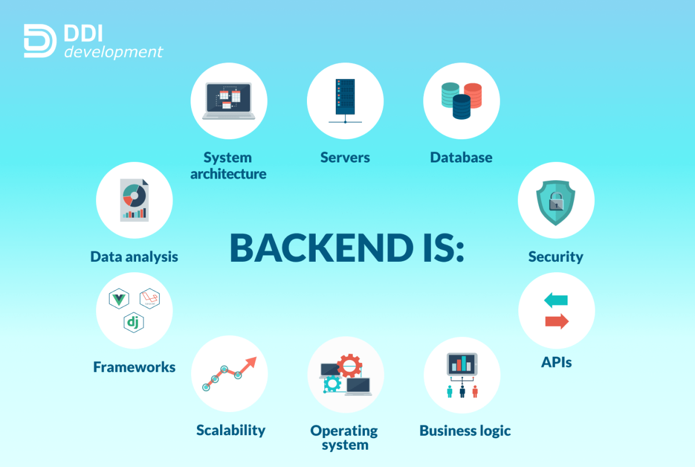

Backend Development involves the logic, database, and other operations that are built behind the scenes to run the web servers efficiently.
Back-end development refers to the server-side (how a web page works).

A backend developer is responsible for writing APIs, designing libraries, improving data architecture, and communicating with the database. The backend developer has good knowledge of backend programming languages, servers, databases, and APIs.
Backend developers use specific tools that help them build stunning web applications. If you are new to this field or are willing to become, you must read this article. I believe it will be worth your time and effort.
Hypertext Preprocessor (PHP) is a scripting language. PHP is widely used all over the world for web development. Companies like Facebook, Wikipedia, Tumblr, Slack, Etsy, MailChimp, and WordPress use this programming language. If you are interested in starting web development, learning PHP would be a good milestone.
Java is a general-purpose, class-based, object-oriented programming language designed for having lesser implementation dependencies. It is a computing platform for application development. Java is fast, secure, and reliable, therefore. It is widely used for developing Java applications in laptops, data centers, game consoles, scientific supercomputers, cell phones, etc.
Python is a famous programming language nowadays Used in web and desktop application development. Python differs from other programming languages because it has better code readability and more straightforward syntax. Platforms like Instagram, Facebook, Spotify use python in their tech stacks.